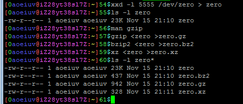
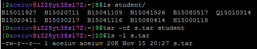
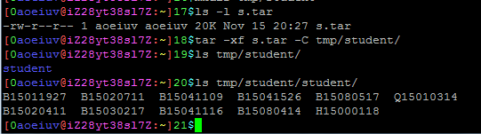
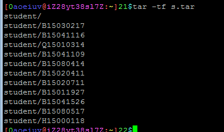
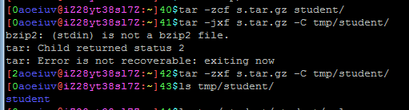
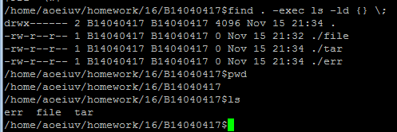

其实tar只是打包工具， 压缩工具是gzip和bzip2和xz这些流压缩工具， 这先不提，只说tar的用法。 先说说tar和zip的区别， zip包括打包和压缩(分别压缩再打包)， tar只是打包，打包后可以用gzip或bzip2或xz进行压缩， zip是windows用的， Linux上虽然能用，但不合适， zip无法正常表示Linux的各种权限和软硬链接。 tar的解压， 网上下载的tar压缩包就几种后辍， *.tar *.tar.gz *.tar.bz2 *.tar.xz 第一个是仅打包不压缩， 后三个对应gzip,bzip2和xz压缩， 三个区别， 压缩率这个词感觉有点歧义，不说， 文件经过三种压缩后的大小是， gz > bz2 > xz
很多开源软件，网上提供源码下载，下载来的通常都是*.tar.gz或*.tar.bz2。
首先是三个参数，-c 打包，-x 解包，-t 查看包的内容，每个tar命令都有且仅有上述一个参数，还有个必需的参数-f，指定tar包文件的路径，相对路径绝对路径，一个解压时选的参数-C，大写的C，表示指定解包到的目录，不写默认当前目录。
打包，把整个student文件夹打包成一个文件s.tar。

解包，因为打包是整个文件夹打包，所以解包出来的也是整个文件夹。

查看，就是看看包里有什么，不解压。

压缩，-z gzip压缩，-j bz2压缩，-J xz压缩，显然，怎么打包的就要怎么怎么解包。

压缩包的名字虽然可以任意起，但是建议按正常的.gz .bz2 .xz结尾。
最后做点什么吧， 虽然这不喜欢作业， 但还布置点事情做吧， 毕竟已经学了这么多了， 一般的任务应该要能完成了， 提交作业到/home/aoeiuv/homework/16目录下 16表示这里是第16节课件的作业， 交作业先创个文件夹，名字是自己的学号，也就是用户名， 然后要把这个文件夹的权限设置为，其他人没有任何权限，不能读写不能进入， 作业就交到这个文件夹下， 然后才是作业内容， 1，file 首先用任何手段得到一个文件，大小2M到10M， 用任何方式描述自己如何得到这个文件，比如所有相关命令，存在文件file里。 2，tar 用三种压缩参数分别对上面得到的文件打包压缩，并对比大小， 把这一步用到的所有命令和输出，存在文件tar里。 3，err 用打包并压缩那个文件，然后不解压缩就直接用tar命令解包，失败， 把错误信息写入文件err。